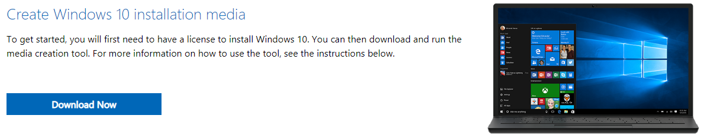
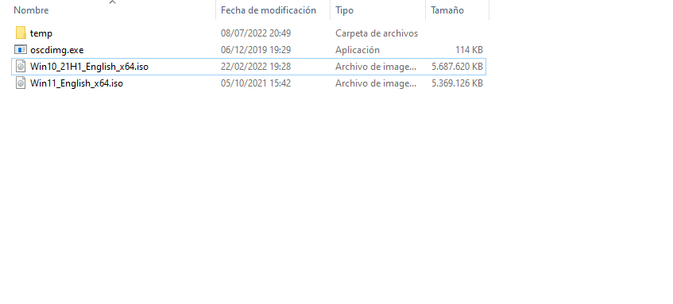
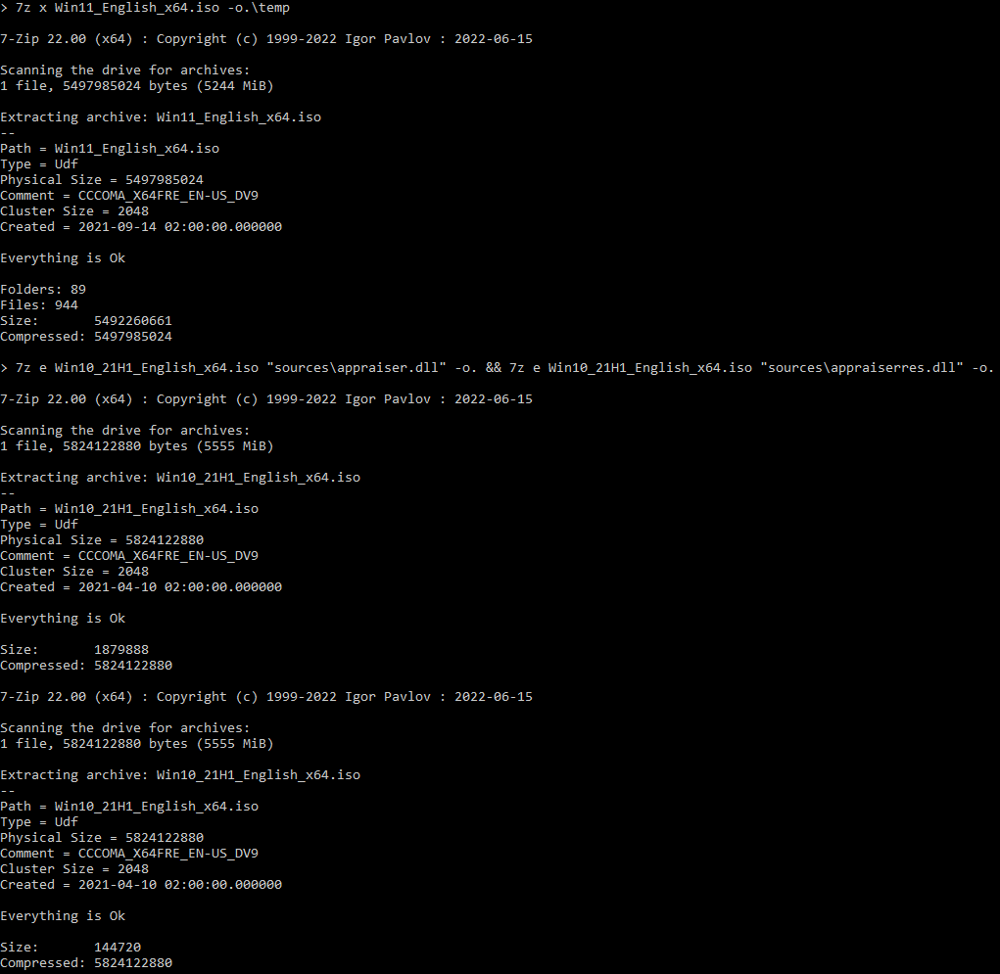
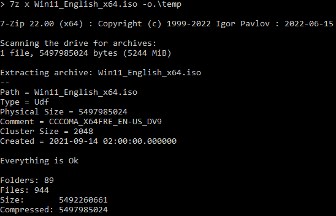

These instructions will guide you in the creation of a custom installer.
In order to create the custom installer, you will need the following prerequisites:
In order to download the Windows 11 and 10 installers, search for "download windows 11" and "download windows 10", or click the links below to download both installers:
Click here to download Windows 11
Click here to download Windows 10
NOTE: if viewed on the Windows 11 Manual Installer, the links will open in an Internet Explorer window
NOTE: you must download the 64-bit version of both installers, as Windows 11 ONLY supports 64-bit hardware

When you arrive at the download page for Windows 11, DO NOT click the first button. This will download the Windows 11 Installation Assistant, which will upgrade your current system to Windows 11. Instead, what you need to do is click either the second or third buttons. If you already have a Windows 10 installer downloaded in the past, choose the third option, select "Multi-edition ISO", then your language, then click "64-bit download". This will download a copy of the latest version of Windows 11 in your Downloads folder.
If you haven't got a Windows 10 image, you will need to click the second button. This will download the Media Creation Tool.
NOTE: if you download the Windows 11 MCT (Media Creation Tool), you will need to do so for Windows 10 as well
NOTE: if you use a Windows system, and want to download Windows 10, you are limited to the MCT
When you have the Media Creation Tool ready, launch it. It will take some time to fully load, because it needs to download required installer files. Once it finishes, accept the license agreement. Wait a little, then select the second option. DO NOT continue with the first option, as it will do the same thing as downloading the Installation Assistant would do: upgrade your system. Continue with recommended settings, choose "ISO file", specify a location and wait for the files to download. Upon completion, you will have a Windows (11/10) installer stored in the specified location.
To download 7-Zip, search "7-zip" on the internet or go to 7-zip.org

Download the appropriate architecture. For better compatibility, choose 32-bit x86. Do note that the 32-bit version will not use all resources given by a 64-bit system to other programs. Open the installer, and proceed with installation.
OSCDIMG is part of the Windows Assessment and Deployment Kit (ADK). It is a set of tools designed for administrators. The ADK comes with OSCDIMG. You can also download OSCDIMG separately.
OSCDIMG + Windows ADK (Windows 11, 22H2)
If you decide to continue with the second option, choose the defaults and wait for installation. The first option will come as a ZIP file. Extract it, and you will have a copy of OSCDIMG.
After all prerequisites are done, you will need to prepare the workspace, just as you would on a workshop. First, create a directory (folder) where you are going to store the images and tools (the latter is optional). You can give it any name you want. Inside that directory, create another one. This one will store the temporary installer files. If you have a standalone copy of OSCDIMG, copy it to the working directory.
The end result should look like this:
Now you get to extract the files from the installers. It is recommended to wait some time, which may depend on disk R/W speeds
NOTE: the methods will be performed on the command line, but they can be done through the GUI
OPTIONAL: adding 7-Zip to %path%
If you want to use the command line, an easier way to access 7-Zip is to add it to %path%. To do this, type: path %path%;"\Program Files\7-Zip"
To extract the installer files using this method, prepare a Command Prompt (cmd) window, and type:
7z e [source installer path] "sources\install.wim" -o.
* Replace [source installer path] with the Windows 11 source installer path. If it does not extract anything, try replacing install.wim with install.esd.
After this command, type:
7z x [source installer path] -o.\temp
* Replace [source installer path] with the Windows 10 source installer path.
The command output should look like this:

To extract the installer files using this method, prepare a Command Prompt (cmd) window, and type:
7z x [source installer path] -o.\temp
* Replace [source installer path] with the Windows 11 source installer path.
After this command, type:
7z e [source installer path] "sources\appraiser.dll" -o. && 7z e [source installer path] "sources\appraiserres.dll" -o.
* Replace [source installer path] with the Windows 10 source installer path.
The command output should look like this:
To extract the installer files using this method, prepare an elevated Command Prompt (cmd) window (meaning you have to run it as an administrator), and type:
7z x [source installer path] -o.\temp
* Replace [source installer path] with the Windows 11 source installer path.
The command output should look like this:
Here comes the fun part: modifying the installer files
To modify the installer using this method, you will need to do the following tasks:
install.wim (or install.esd if present) from the temporary directory by typing: del .\temp\sources\install(.wim/.esd)install.wim or install.esd to temp\sources by typing: move /y install(.wim/.esd) .\temp\sourcesTo modify the installer using this method, you will need to do the following tasks:
appraiser.dll and appraiserres.dll from temp\sources by typing: del .\temp\sources\appraiser.dll && del .\temp\sources\appraiserres.dlltemp\sources by typing: move /y *.dll .\temp\sourcesNOTE: you will need a Command Prompt window as an administrator
To modify the installer using this method, you will need to do the following tasks:
wimmountdism /mount-wim /wimfile=.\temp\sources\boot.wim /index=2 /mountdir=.\wimmountSYSTEM registry hive. To do this, type reg load HKLM\W11SYS .\wimmount\system32\config\SYSTEMLabConfig. To do this, type reg add HKLM\W11SYS\Setup\LabConfigLabConfig: BypassCPUCheck, type: REG_DWORD, value: 1: reg add HKLM\W11SYS\Setup\LabConfig /v BypassCPUCheck /t REG_DWORD /d 1BypassRAMCheck, type: REG_DWORD, value: 1: reg add HKLM\W11SYS\Setup\LabConfig /v BypassRAMCheck /t REG_DWORD /d 1BypassSecureBootCheck, type: REG_DWORD, value: 1: reg add HKLM\W11SYS\Setup\LabConfig /v BypassSecureBootCheck /t REG_DWORD /d 1BypassTPMCheck, type: REG_DWORD, value: 1: reg add HKLM\W11SYS\Setup\LabConfig /v BypassTPMCheck /t REG_DWORD /d 1BypassStorageCheck, type: REG_DWORD, value: 1: reg add HKLM\W11SYS\Setup\LabConfig /v BypassStorageCheck /t REG_DWORD /d 1SYSTEM registry hive: reg unload HKLM\W11SYSdism /unmount-wim /mountdir=.\wimmount /commitNOTE: you must close all processes that show the mount point, or else you will not be able to unmount the image
wimmount directory: rd .\wimmount /s /qAfter modifying the installer files, you need to create it. To do this, run this command:
oscdimg -l[image label] -m -u2 -b.\temp\boot\etfsboot.com .\temp [Target installer path]
* Replace [image label] with the label you want. NO spaces need to be between -l and the desired label, and the label must not surpass 32 characters
* If you are making an installer for a device with Legacy Boot disabled, you need to replace -b.\temp\boot\etfsboot.com with -b.\temp\boot\Efisys.bin -pEF, if present
* Replace [Target installer path] with the target installer path
* If you have installed the ADK, replace oscdimg with "\Program Files (x86)\Windows Kits\10\Assessment and Deployment Kit\Deployment Tools\x86\Oscdimg\oscdimg.exe" or add "\Program Files (x86)\Windows Kits\10\Assessment and Deployment Kit\Deployment Tools\x86\Oscdimg" to %PATH%: path %path%;"\Program Files (x86)\Windows Kits\10\Assessment and Deployment Kit\Deployment Tools\x86\Oscdimg"
The syntax should look like this:

After the image has been created, feel free to delete all temporary files and reclaim disk space.
Like the process of testing a microphone, you will need to test your custom installer after it has been created. You don't need to say "Testing, 1, 2, 3" to test the image. To test it:
You will need to download balenaEtcher or Rufus to put the installer on a USB drive you can carry with you anywhere. If all goes well, you can now install Windows 11.